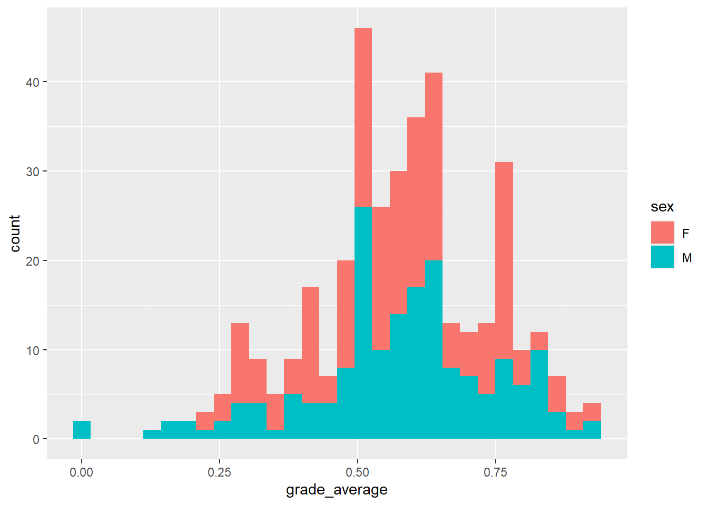
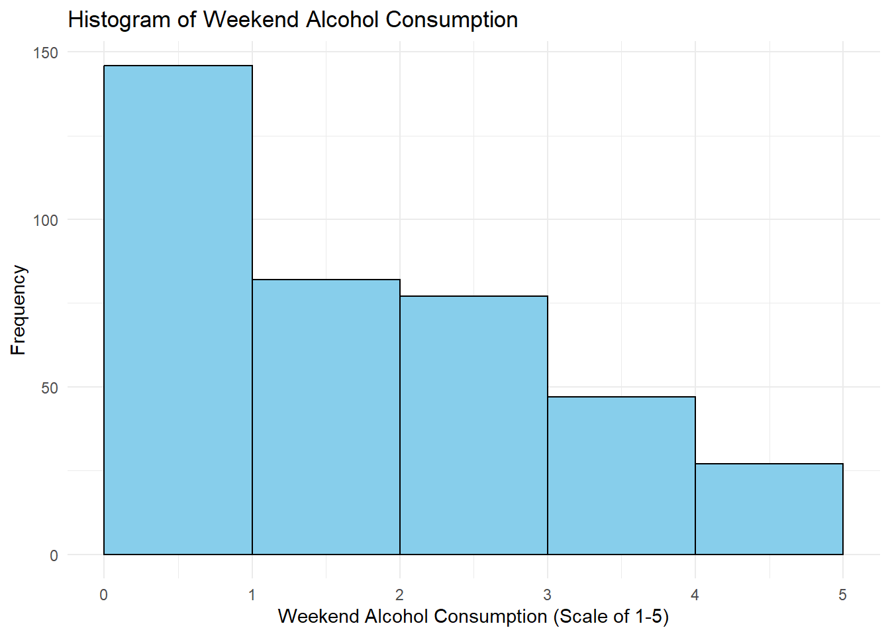
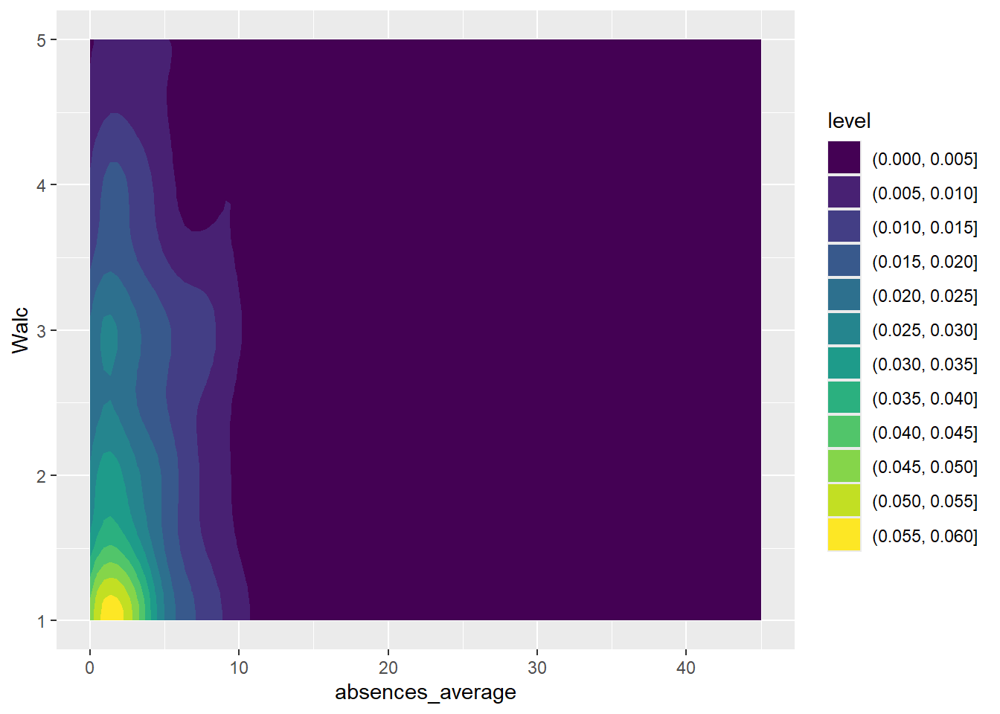

Final_Project
Introduction
Research Questions
For our final project, we are interested in how a student’s lifestyle affects their GPA. We consider two research questions: our initial research question is “Does alcohol consumption on the weekend negatively impact GPA?”, and to better understand the nature of variable distributions as well as to contrast the first research question, we consider a second research question “Do absences have a negative impact on GPA?”
We are correlating weekend alcohol consumption and absences with GPA instead of “study” (referring to study ours), since studying is… 1. Obvious— recommended by teachers, internet resources, and its benefits observed throughout one’s precollege studies— and thus completely redundant and uninformative, and 2. Because students who study have social lives (to some degree or other) and, given the novelty of the college experience and to drinking and parties in general, should be made aware of the impact it has had for other students, so that they might rethink the degree and/or frequency of their behaviors depending on the results of our data analysis.
And one last consideration– it should be noted that behaviors have consequences. While it’s possible to “make up for” flawed behavior, the number of hours one can allocate is the sum of the hours in a day. Therefore, there is an innate tradeoff that will afflict every student. However, the degree of the tradeoff is what we will be considering. If the tradeoff for drinking yourself to sleep every night is a tentative 5% decrease in GPA, that is magnitudes less important a realization compared to a 50% decrease in GPA. Thus, our analysis will focus on deducing that degree of exigence, such that students can reduce the “flawed behavior”, or at least deduce what went wrong in the event their actions had reprecussions.
Data Introduction
We are using a data set from the website Kaggle, which has a public catalog free for anyone to use. The specific data set that we landed on was student_lifestyle_dataset.csv. It is a dataset collected by Sumit Kumar, a researcher from India for the academic year from August 2023 to May 2024 that monitored student’s (primarily from India) lifestyle habits in college.
It has 2000 cases each identified by a number going from 1-2000, with a recorded value for seven variables about their daily lifestyle, including ones of interest for us: sleep hours, social hours, and GPA (The author noted in a response to a comment that CGPA values were converted to GPA values to ensure usability for international researchers).
Our second dataset is also from Kaggle. It is data collected from a survey in math and Portuguese language classes of students in secondary (high) school. The data is split into two csv’s, but we merged the two to create one big dataset and will use that in our analysis. Our final merged dataset includes 33 variables with 396 cases.
Analysis Outline
Data Analysis
Research Question #1
Findings For Question #1
Impact of Absences on Grade Performace
As we observed from our analysis of weekend alcohol consumption on GPA, there is a moderate inversely-proportional relationship between the “degree of drinking” of college students on weekends and their average performance between the two courses, Math and Portuguese.
However, as also mentioned during the previous data analysis, the difference is incremental with perhaps a (change figure: 10%) change in GPA between the most-infrequent and most-frequent drinkers. There are a number of ways to interpret this, as also mentioned in the previous data analysis: for starters, that the classes are relatively easy and thus the behavior quite unimpactful on the average GPA, or perhaps that students’ perception of their drinking compared to others is completely off-kilter. Regardless, the lack of change in the data is concerning.
Our next question will resolve or reinforce some of our doubts: depending on the reported impact or lack thereof of absences on GPA, our certainty in the may or may not waver.
Thus, we plan to investigate and judge several traits of the dataset with respect to itself, alcohol, and GPA:
Distribution of Absences: It’s important to consider the degree of students’ not attending.
Absences vs GPA: How does a comparable box plot of absences sharing the same scale as GPA compare?
Absences vs Alcohol: Do these two variables correlate? If so, which order
Distribution of Absences
# Create a histogram for the distribution of "average absences"
ggplot(clean, aes(x = absences_average)) +
geom_histogram(binwidth = 5, fill = "skyblue", color = "black") +
labs(x = "Absences", y = "Frequency of Absences", title = "Distribution of Absence Frequencies") +
theme_minimal()
Absences vs GPA
# Average absences
ggplot( # Set our axis and data
data = clean,
mapping = aes(
x = factor(abs_avg_group_5),
y = grade_average,
)
) +
geom_boxplot(size = .8)+
labs( # Label our data
x = "Number of School Absences",
y = "Average Grade",
title = "Effect of Absences on GPA"
) +
theme_bw()+
theme( # Move the legend
legend.position = "bottom",
panel.background = element_rect(fill = "#d5e0e0")
)
The significance of absence data depends on the skew of the distribution. If the distribution is extraordinarily skewed, it is more challenging to deduce the impact of the behavior on GPA due to the relative lack of sample size.
# Math Absences
ggplot( # Set our axis and data
data = clean,
mapping = aes(
x = factor(abs_math_group_5),
y = grade_math,
)
) +
geom_boxplot(size = .8)+
labs( # Label our data
x = "Number of School Absences",
y = "Average Grade",
) +
theme_bw()+
theme( # Move the legend
legend.position = "bottom",
panel.background = element_rect(fill = "#d5e0e0")
)
# Portuguese Absences
ggplot( # Set our axis and data
data = clean,
mapping = aes(
x = factor(abs_port_group_5),
y = grade_port,
)
) +
geom_boxplot(size = .8)+
labs( # Label our data
x = "Number of School Absences",
y = "Average Grade",
) +
theme_bw()+
theme( # Move the legend
legend.position = "bottom",
panel.background = element_rect(fill = "#d5e0e0")
)

Figure 2.3: Effect of Absences in Either Class on Grade